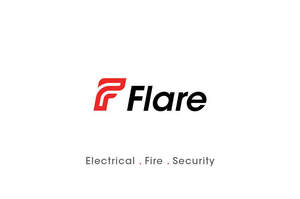
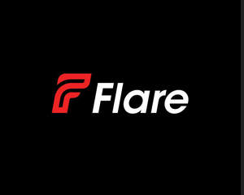

Trade Mark Journal No.2025/018 2 May 2025
UK00004179913 26 March 2025 (1,4,6,9,11,19,35,37,40,41,42,44,45)
Mark 1
Mark 2

Mark 3

- Class 1
- Plumbing flux.
- Class 4
- Heating oil.
- Class 6
- Metal heating ducts.
- Class 9
- Fire alarms; Alarms (Fire -); Alarms; Smoke alarms; Fire detectors; Burglar alarms; Fire blankets; Security alarms; Alarm systems; Electrical wiring installations; Electrical cabling; Control installations (Electric -); Electrical cables; Electrical components; Electrical wires; Electrical transformers; Electrical circuits; Electrical outlets; Photovoltaic apparatus and installations for generating solar electricity; Electrical switches; Electrical sockets; Alarm installations; Electric installations for the remote control of industrial operations; Security cameras; Control panels for security alarms; Closed circuit TV [CCTV] software; Closed circuit television systems (CCTV); Surveillance cameras; Video surveillance cameras; Lenses for video cameras; Camera shutters.
- Class 11
- Heating installations; Installations for heating; Industrial heating installations; Lighting installations; Installations for lighting; Electrical luminaires; Security lighting; Motion sensitive security lights; Appliances for heating; Radiators [heating]; Heating boilers; Gas boilers for water heating; Water heating installations; Heating installations [water]; Heating installations for gas; Electric central heating boiler systems; Stoves for heating; Electrical heating elements; Boilers for use in heating systems; Underfloor heating installations; Boilers for heating installations; Gas boilers for central heating; Electric radiators for heating buildings; Flues for heating boilers; Thermal radiators for the heating of buildings; Heaters for heating irons; Air heating installations; Sanitary and bathroom installations and plumbing fixtures; Heating rods; Thermostatic valves [parts of heating installations]; Emergency lighting; Emergency lighting installations; Emergency lights.
- Class 19
- Non-metal heating ducts.
- Class 35
- Retail services in relation to domestic electrical equipment.
- Class 37
- Fire alarms (Repair of -); Fire alarms (Installation of -); Fire alarm installation; Fire alarm repair; Maintenance of fire alarm installations; Repair or maintenance of fire alarms; Fire alarm installation and repair; Maintenance and repair of fire alarm systems; Maintenance and servicing of fire alarm systems; Fire extinguisher recharging services; Repair of alarms; Alarms (Repair of -); Installation of burglar alarms; Alarms (Installation of -); Installation of fire suppression systems; Installation of fire detection systems; Installation of fire evacuation systems; Burglar alarm repair; Repair of electrical equipment and electrotechnical installations; Installation of electrical earthing; Electrical installation services; Installation of electrical grounding; Installation of electrical and generating machinery; Installation and maintenance of photovoltaic installations; Electrical wiring services; Maintenance and repair of gas and electricity installations; Maintenance of commercial electrical systems; Installation of plumbing systems; Renovation of electrical wiring; Maintenance and repair of electrical earthing systems; Maintenance and repair of solar power installations; Electric appliance installation ; Repair of electrical equipment; Construction of utility solar installations; Installation of plumbing; Installation of lighting systems; Heating equipment installation; Electrical contractor services; Renovation, repair and maintenance of electrical wiring; Installation of electric light and power systems; Maintenance, repair and reconditioning of photovoltaic apparatus and installations; Repair services for domestic electrical appliances; Installation of security system; Repair of security locks; Maintenance and servicing of security alarms; Installation of residential security apparatus; Maintenance and repair of security systems; Maintenance and repair of security installations; Building maintenance; Building maintenance and repair; Maintenance of buildings; Maintenance and repair of building contents; Maintenance and repair of buildings; Building repairs; Building construction and repair; Maintenance and repair of residential buildings; Maintenance and repair of office buildings; Building repair; Building repair and renovation; Maintenance and repair of utilities in buildings; Building construction supervision services for building projects; Building construction; Building; Building restoration; Building and construction services; Building construction services; Building construction and demolition services; Supervision of building renovation; Building construction supervision; Building maintenance and repair services provided by a handyman; General building construction services; Supervision of building demolition; Renovation and repair of buildings; Maintenance of property; Property maintenance; Maintenance of plumbing; Maintenance and repair of heating installations; Residential and commercial building construction; Plumbing; Plumbing and gas and water installation; Plumbing and glazing services; Cleaning of water supply plumbing; Heating equipment repair; Repair of heating apparatus; Heating contractor services; Renovation of plumbing; Plumbing services; Central heating installation; Installation of central heating; Maintenance and repair of heating; Heating equipment installation and repair; Retrofitting of heating, ventilating and air conditioning installations in buildings; Installation of doors and windows; Doors and windows (Installation of -); Windows (Installation of doors and -); Installation of doors; Installation of door openers; Installation of door fittings; Repair of door frames; Fire detection system installation; Installation of door closers; Maintenance and repair of fire detection systems; Maintenance and repair of fire evacuation systems; Installation of industrial fire protection; Installation of door openers and closers; Installation of lighting apparatus; Burglar alarm installation; Repair of cameras; Burglar alarm installation and repair; Installation of security systems; Services for the installation of alarms; Installation, maintenance and repair of burglar alarms.
- Class 40
- Rental of heating installations.
- Class 41
- Leasing of television cameras.
- Class 42
- Designing of electrical systems; Design of heating; Inspection of buildings [surveying].
- Class 44
- Garden maintenance.
- Class 45
- Monitoring fire alarms; Monitoring of fire alarms; Rental of fire alarms; Fire alarms (Rental of -); Leasing of fire alarms; Rental of fire extinguishers; Fire extinguishers (Rental of -); Monitoring of alarms; Monitoring alarms; Monitoring of burglar and security alarms; Monitoring burglar and security alarms; Rental of alarms; Security guard services; Security services; Monitoring of security systems; Security assessment of risks; Security services for buildings; Rental of security surveillance apparatus; Rental of security surveillance equipment.
creative electrical ltd